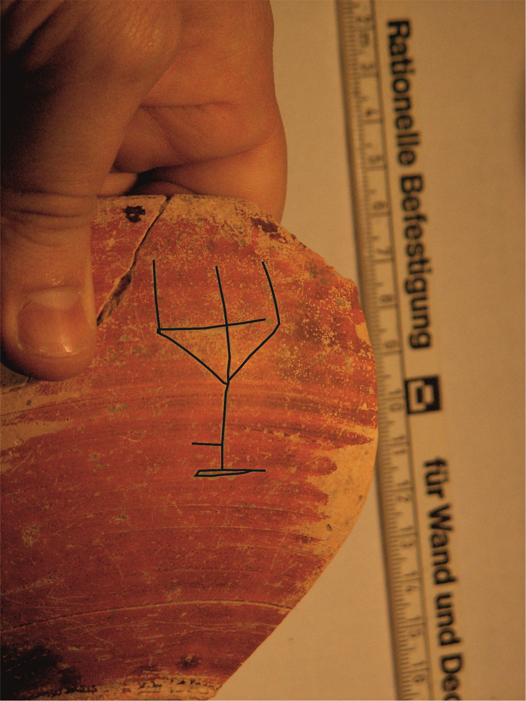

Grafito de tridente sobre cerámica pigmentada (Pompelo, Plaza del Castillo, Pamplona, Navarra)
Pompelo (Pamplona, Navarra), Hispania citerior · s. II d.C.


Texto
Tridente (completo)
Comentario
Pertenece a un conjunto de seis tridentes de tipología poco habitual: entre el palo y la línea perpendicular aparecen otras dos líneas que refuerzan la estructura, y la herramienta parece contar con una base horizontal. Su diseño guarda semejanza con una tipología de candelabros, pero no es seguro que represente ese objeto.
Descripción
- Soporte
- Cuenco de cerámica pigmentada, forma U.13, conservado íntegro: Ø de boca de 18 cm, Ø de fondo de 6 cm y altura de 7,2 cm. Tipológicamente se trata de una imitación de la forma 8 de T.S.H. Pasta clara y barniz de buena calidad de color naranja intenso con zonas oscuras.
- Disposición
- Localización del grafito: Pared exterior de la pieza.
- Descripción del grafito
- Tridente completo. Obsérvese el pequeño trazo horizontal en la mitad inferior izquierda, que podría tener algún tipo de función.
- Datación
- s. II d.C.
- Lugar de origen
- Pompelo (Pamplona, Navarra), Hispania citerior
- Hallazgo
- Excavación de la Plaza del Castillo de Pamplona (2001-2003), sector 3. Según el contexto general de la excavación, las piezas aparecieron en un barrio artesanal. Los estratos están revueltos y no hay estratigrafía válida para fechar las piezas: la datación se basa en las formas cerámicas.
- Ubicación actual
- Almacén de Arqueología del Gobierno de Navarra
Bibliografía
- P. Ozcáriz Gil; M. Unzu, «Grafitos figurativos, palmas, tridentes y otros signos en cerámica romana de la Plaza del Castillo de Pamplona», Príncipe de Viana 253 (2011), pp. 79-95.
Cómo citar esta ficha
Ozcáriz Gil, P., Grafitos sobre cerámica romana: corpus EpiDoc, ficha pompelo-019-tridente, https://pozcariz.github.io/grafitos-epidoc/pompelo-019-tridente.html.